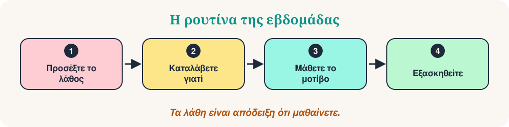

Καλώς ήρθατε στα Λάθη του Σαββάτου. Κάθε εβδομάδα εξετάζουμε πέντε μικρά λάθη που κάνουν οι μαθητές, καταλαβαίνουμε γιατί συμβαίνουν και τα αντικαθιστούμε με ένα φυσικό μοτίβο. Τα λάθη δεν είναι πρόβλημα. Είναι απόδειξη ότι μαθαίνετε.
Αυτή την εβδομάδα: πέντε συνηθισμένα λάθη στα ελληνικά. Κάθε λάθος ακολουθεί τα ίδια βήματα: η πρόταση που δεν είναι ακριβώς σωστή, η καλύτερη πρόταση, ο λόγος, ένας απλός κανόνας και ένα μικρό κουίζ. Προσέξτε το μοτίβο, όχι μόνο την πρόταση.

Τα πέντε λάθη της ημέρας
- Θέλω + να
- Αιτιατική: το αντικείμενο
- σε + το = στο
- Επίθετο και ουσιαστικό
- δεν … ποτέ
Θέλω + να
«Θέλω πηγαίνω στο σινεμά.»
«Θέλω να πάω στο σινεμά.»
Γιατί συμβαίνει. Στα ελληνικά δεν υπάρχει απαρέμφατο. Μετά από ρήματα όπως θέλω, μπορώ, πρέπει χρησιμοποιούμε «να» και ένα ρήμα που αλλάζει μορφή.
Ο κανόνας COSY. θέλω / μπορώ / πρέπει + να + ρήμα: Θέλω να πάω. Μπορώ να μιλήσω.
- Θέλω να φάω.
- Μπορώ να σε βοηθήσω.
- Πρέπει να φύγω.
❓ Ποια πρόταση είναι σωστή;
Μετά το «θέλω» χρειάζεται «να»: Θέλω να μιλήσω.
Αιτιατική: το αντικείμενο
«Βλέπω ο Γιάννης.»
«Βλέπω τον Γιάννη.»
Γιατί συμβαίνει. Το αντικείμενο του ρήματος μπαίνει στην αιτιατική: το άρθρο και η κατάληξη αλλάζουν (ο Γιάννης → τον Γιάννη).
Ο κανόνας COSY. Στο αντικείμενο: ο → τον, η → την, το → το. Η κατάληξη αλλάζει επίσης: ο φίλος → τον φίλο.
- Βλέπω τον φίλο μου.
- Αγαπώ την Ελένη.
- Βλέπω το παιδί.
❓ Βλέπω ___ φίλο μου.
Το αντικείμενο θέλει αιτιατική: τον φίλο.
σε + το = στο
«Πάω σε το σχολείο.»
«Πάω στο σχολείο.»
Γιατί συμβαίνει. Η πρόθεση «σε» ενώνεται με το άρθρο και γίνεται μία λέξη.
Ο κανόνας COSY. σε + τον = στον, σε + την = στην / στη, σε + το = στο.
- Πάω στο σπίτι.
- Είμαι στην Αθήνα.
- Μένω στον πρώτο όροφο.
❓ Πάμε ___ θάλασσα.
σε + τη = στη. Η λέξη «θάλασσα» είναι θηλυκό.
Επίθετο και ουσιαστικό
«Η φίλη μου είναι καλός.»
«Η φίλη μου είναι καλή.»
Γιατί συμβαίνει. Το επίθετο παίρνει το ίδιο γένος με το ουσιαστικό. Πολλοί μαθητές μαθαίνουν μόνο την αρσενική μορφή.
Ο κανόνας COSY. Το επίθετο ταιριάζει με το ουσιαστικό: ο καλός φίλος, η καλή φίλη, το καλό παιδί.
- Ο καλός φίλος.
- Η καλή φίλη.
- Το καλό παιδί.
❓ Η Μαρία είναι ___.
Η Μαρία είναι θηλυκό: καλή.
δεν … ποτέ
«Πηγαίνω ποτέ στο θέατρο.»
«Δεν πηγαίνω ποτέ στο θέατρο.»
Γιατί συμβαίνει. Λέξεις όπως ποτέ, τίποτα, κανείς χρειάζονται και «δεν» πριν από το ρήμα.
Ο κανόνας COSY. δεν + ρήμα + ποτέ / τίποτα / κανέναν.
- Δεν ξέρω τίποτα.
- Δεν βλέπω κανέναν.
- Δεν τρώω ποτέ κρέας.
❓ Ποια πρόταση είναι σωστή;
Με το «ποτέ» χρησιμοποιούμε «δεν»: Δεν πηγαίνω ποτέ.
Η εξάσκησή σας των 10 λεπτών
- Διαλέξτε δύο λάθη που κάνετε μερικές φορές.
- Γράψτε τρεις νέες προτάσεις για το καθένα, με τον κανόνα.
- Πείτε τις φωναχτά και ηχογραφηθείτε.
- Συγκρίνετε τις προτάσεις σας με τα παραδείγματα παραπάνω.
- Την επόμενη εβδομάδα, προσέξτε τα ίδια μοτίβα σε πραγματικές συζητήσεις.
Να θυμάστε
Προσέξτε το μοτίβο. Εξασκηθείτε στο μοτίβο. Κάντε το δικό σας. Ποια απάντηση σάς εξέπληξε περισσότερο; Γράψτε την και χρησιμοποιήστε την σε μια πρόταση σήμερα.
“Τα λάθη είναι μέρος της μάθησης.”
📚 Για περαιτέρω ανάγνωση
Οι ιδέες αυτού του άρθρου στηρίζονται σε δημοσιευμένη έρευνα και διδακτική πρακτική. Ξεκινήστε από εδώ:
- Corder, S. P. (1967). The significance of learners' errors. International Review of Applied Linguistics, 5(4), 161–170.
- Hattie, J., & Timperley, H. (2007). The power of feedback. Review of Educational Research, 77(1), 81–112.
- James, C. (1998). Errors in Language Learning and Use: Exploring Error Analysis. Longman.
- Lyster, R., & Ranta, L. (1997). Corrective feedback and learner uptake: Negotiation of form in communicative classrooms. Studies in Second Language Acquisition, 19(1), 37–66.
- Roediger, H. L., & Karpicke, J. D. (2006). Test-enhanced learning: Taking memory tests improves long-term retention. Psychological Science, 17(3), 249–255.